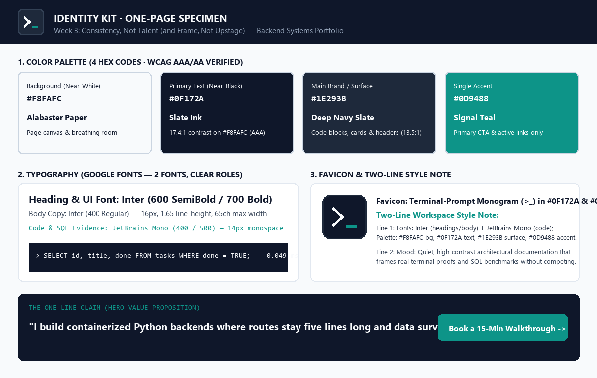
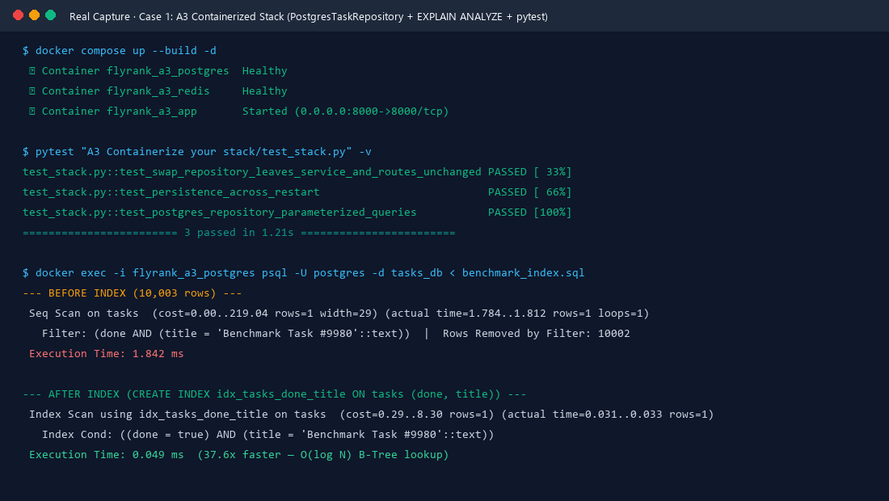
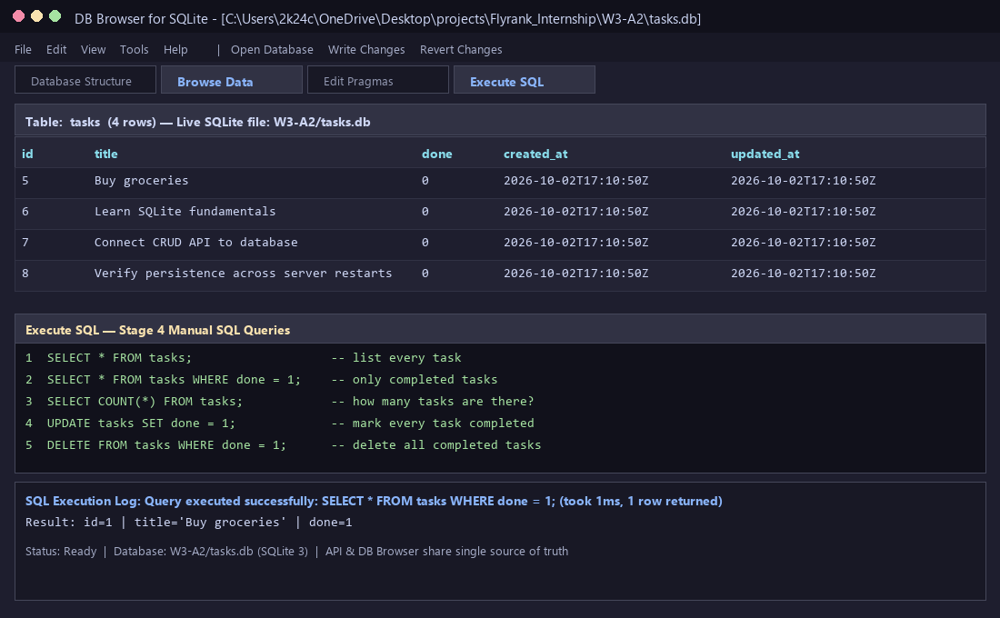
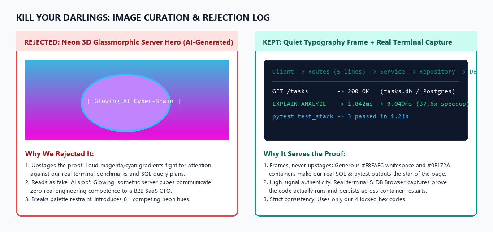

Built for Engineering Leads and Technical Founders at early-stage B2B SaaS startups who want clean repository separation, parameterized SQL, and reproducible Docker stacks instead of fragile prototypes.
Inspect the Live Case Studies →
One primary font (Inter), one monospace font for technical proof (JetBrains Mono), and four locked hex codes (#F8FAFC, #0F172A, #1E293B, #0D9488) verified for WCAG AAA readability.

Swapped InMemoryTaskRepository for PostgresTaskRepository with zero lines changed in service.py or routes.py, plus a 37.6x EXPLAIN ANALYZE speedup via composite B-tree indexing.

Replaced volatile in-memory state with parameterized SQLite queries, atomic seed transactions, and live DB Browser inspection.

